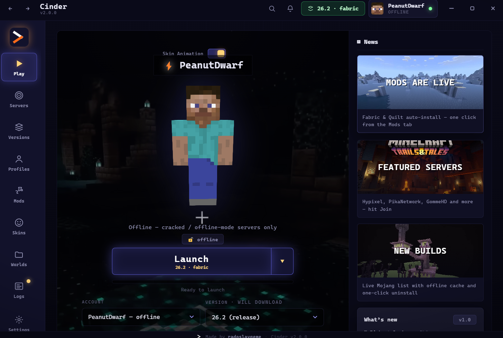

Everything in one launcher.
Nine tabs: Play, Servers, Versions, Profiles, Skins, Worlds, Mods, Settings and Logs.
Offline names or Microsoft login.
Add offline profiles for servers you own, or sign in with Microsoft to join premium servers.
- Microsoft token refreshes on launch
- Name forge: five styles (Mixed, Ember, Hero, Dark, Cute), always 3-16 valid characters
- Duplicate names are blocked against your existing accounts
- Click an avatar to switch accounts

Any Minecraft version, the right Java.
Browse the live Mojang list, install, uninstall and filter by type.
- Release, snapshot, beta and alpha filters
- Java picked per version: 1.18+ uses 17, 1.20.5+ uses 21, 26.x uses 25
- Installed badges and an installed-only filter
- Cached for 6 hours with an offline fallback

Modrinth mods without leaving the launcher.
Search Modrinth, pick a version and install. Fabric and Quilt install automatically.
- Local mod list with enable/disable toggles
- Warns when a Forge or NeoForge mod does not match your setup
- Version picker per mod

Live server status.
Featured networks plus your own quick-join list, each with player counts and ping.
- Players, max, MOTD, ping and version per server
- Fast Rust probe with a pure-Node fallback
- Results cached for 60 seconds
- Search and filters

Preview any skin in 3D.
Type a Java username, preview the skin on a rotating model, or load your own.
- My profile skin in one click
- Upload a 64x64 PNG from disk
- Save the current preview as PNG
- Skin lookups cached for 24 hours

Back up and restore worlds.
Every singleplayer save, with size and modified date.
- Backup to a timestamped zip in your game folder
- Restore the newest backup; your current folder is kept as .bak
- Delete with a confirmation step
- Open the saves folder from the app

Tuned JVM. Automatic Discord status.
Pick a JVM preset and set RAM; keep Discord open and your profile shows Playing Cinder.
- Presets: balanced, performance (G1GC) and latency (ZGC, Java 21+)
- RAM sliders, resolution presets, custom JVM args
- In game: Playing Minecraft version, player and server, with a timer
- No bot, token or setup for players
- Copy diagnostics for support in one click